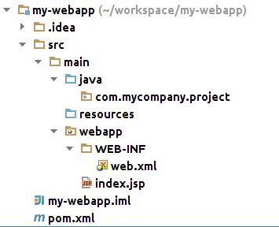

Очень! Очень! Очень! важно писать аккуратно и как все, но за этим сложно следить.
И если об этом постоянно думать, то времени на написание приложения совсем не остается. Что делать?
Потому что, 80% рабочего времени программист читает код
Метод который не вмещается на экран (выпадает из области видимости) на 2 строки отлаживается в 2 раза дольше чем тот кторый вмещается
Это Command Line инструмент сборки, который конфигурируется с помощью xml
> mvn archetype:generate
-DgroupId=com.mycompany.app
-DartifactId=my-webapp
-DarchetypeArtifactId=maven-archetype-webapp
